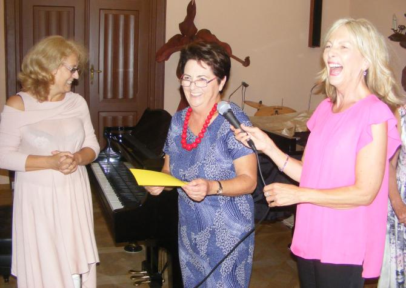
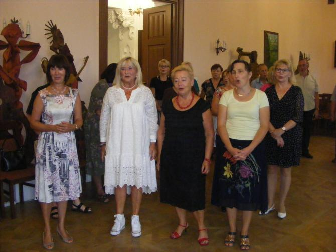
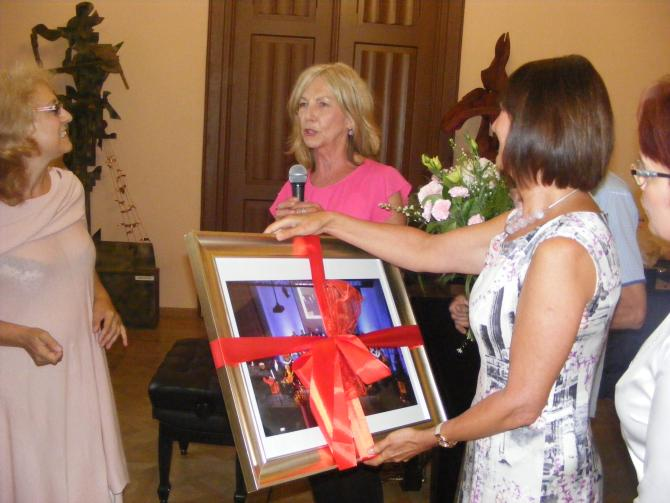
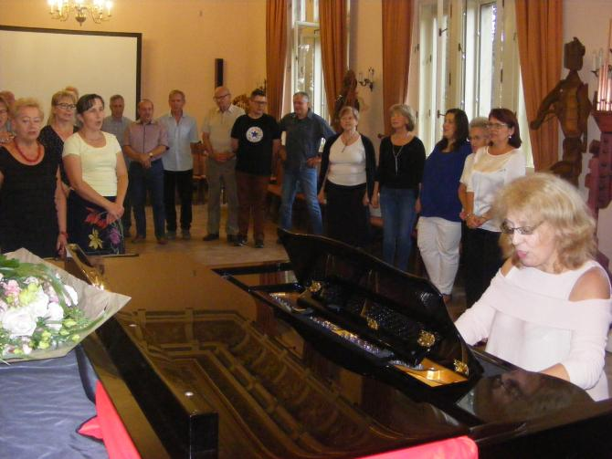

A tymczasem w Cameracie...
.
2019-09-07
20 lat pracy dyrygentki z Cameratą!!!
Zaczynamy od wierszyka napisanego (jak zwykle) przez Ewę. Sądząc po reakcji Małgosi, chyba fajny, ale...

przekonajcie się sami :)„Dwie dekady z CAMERATĄ”
Dwadzieścia lat temu Izo,
trawiła Cię jedna troska,
czy lepiej chór poprowadzisz
niźli Monika Bachowska.
Ale że nuda w Twym życiu
wystarczająco Ci zbrzydła
postanowiłaś, wszelako,
chór wziąć pod swoje skrzydła.
Byłaś młoda i pełna
artystycznych planów
co do tych kilkunastu
miłych pań i panów.
Dźwignęłaś amatorów
na wyższe poziomy
pozwalając im śpiewać
klasyczne kanony.
Tymczasem przybywało
ciągle nowych chórzystów,
z aspiracją do miana
przyszłych wielkich artystów.
Z tą „wielkością” jednakże
przeróżnie bywało
Czasem się wielkie sukcesy
czasem wpadki miało.
Były harce, hulanki.
Były złe humory....
Ale jakoś dotarłaś
z nami do tej pory.
Bo z kim będzie Ci lepiej
niźli z Cameratą?
Żeś dwadzieścia lat z nami....
Dziękujemy Ci za to.
Teraz 100 lat i ...

życzenia

Jeszcze 100 lat dla solenizantów
i imprezka.

Tak zaczęliśmy nowy rok, oczywiście szkolny, czyli cameracki :)

© Stowarzyszenie Muzyczne Chór Camerata Wieliczka
Projekt i wykonanie:  Prowadzenie strony oraz zdjęcia: Małgorzata Wysocka-Cebula
Prowadzenie strony oraz zdjęcia: Małgorzata Wysocka-Cebula